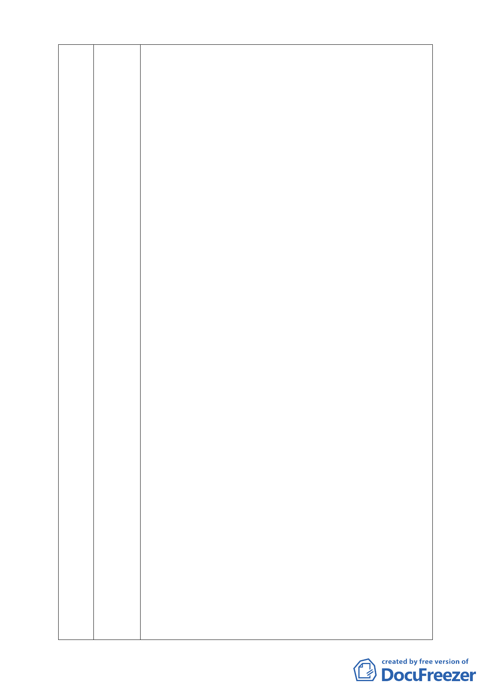

45 劉德正 本案有以下幾點疑義，委員會應予以退回：
一、無都市計畫法第二十七條第一項第三款「為適應國防或經濟發
展之需要時，直轄市政府應視實際情況迅行變更」之適用：（1）慈
濟為佛教團體，無國防發展相關需要。（2）社會福利設施為非營利
事業團體，無經濟發展相關需要。
二、未依都市計畫法第十九條辦理說明會：本案公開展覽（94 年 4
月 1 日 ）時間久遠，計畫書內容迥異，其中非都市計畫委員會審
議修正者，依都市計畫法第十九條第三項規定，審議前應重新辦理
公開展覽及舉行說明會。本案未依都市計畫法第十九條第一項相關
規定舉行說明會，依法應退回，俟舉行公聽會後，再送台北市都市
計畫委員會審議 。
三、慈濟內湖園區變更保護區為社會福利特定專用區應實施環評：
（1）園區之開發：依據「認定標準」第 4 條第 9 款，園區之開發
位於山坡地，申請開發面積一公頃以上者，應實施環境影響評估。
（2）「醫療保健服務業」部分：依據「認定標準」第 24 條第 7 款
「醫療建設」之開發，位於山坡地之區位，申請開發面積一公頃以
上，應實施環評。（3）設置老人「輕安居中心」部分：依據「認定
標準」第 31 條第 11 款「安養中心」、「老人福利機構」之興建，位
於山坡地之區位，申請開發面積一公頃以上，即應實施環評。允許
使用：社區遊憩設施、醫療保健服務業、社會福利設施、人民團體
等均不屬文教建設之開發，應無「認定標準」第 1 項第 1 款第 23
條第 6 目之適用。
四、主要計畫書不符都市計畫法第十五條相關規定：依都市計畫法
第十五條第一項第三、四、六、七、八款規定，本案主要計畫書缺
人口與經濟發展推計、其他土地使用配置、主要道路、主要上下水
道系統 、供作全部計畫地區範圍使用之公共設施用地。
五、細部計畫書不符都市計畫法第二十二條相關規定：依都市計畫
法第二十二條第一項第二、五、六款、同條第二款規定，本案細部
計畫書缺居住密度及容納人口 、道路系統 、地區性之公共設施用
地，細部計畫圖比例尺大於一千二百分之一亦不符規定。
六、主要計畫書當地自然、社會及經濟狀況之調查與分析問題：依
都市計劃第 15 條第一項第一款，本案資料為民國 94 年前老舊資
料，距今超過五年以上，不符當地實情。其現況地形圖分析未依民
國 89 年農委會水保局解釋函「所謂坡度分析應根據自然地形做分
析」，明顯違反法規規定。
七、本案容積率 160％依可建地 44829 平方公尺計算，容積坪約可
建築 71700 平方公尺（約 21700 坪），相當於 20 多倍的大湖內閣，
建築量體極為可觀。
八、未依水土保持技術規範設置排水及滯洪沉砂設施：依水土保持
技術規範第十三節坡地排水系統，第八十三條第一項第一款及第十
-3-